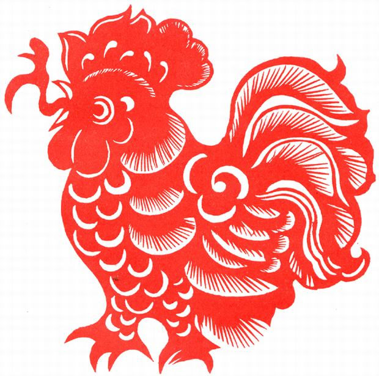

Rooster

The Rooster's Personality:
Roosters are always active, amusing, and popular within a crowd. Roosters are talkative, outspoken, frank, open, honest, and loyal individuals. They like to be the center of attention and always appear attractive and beautiful. Roosters are happiest when they are surrounded by others, whether at a party or just a social gathering. They enjoy the spotlight and will exhibit their charm on any occasion. Roosters expect others to listen to them while they speak, and can become agitated if they don't. Vain and boastful, Roosters like to brag about themselves and their accomplishments. Their behavior of continually seeking the unwavering attention of others annoys people around them at times.
The Best Careers for Roosters
Roosters are more motivated than other animals in the Chinese zodiac, making their careers a priority in their lives. Roosters are hard working, multi-talented, and can deal with a variety of jobs.
Good career choices for Roosters are newsreader, sales person, restaurant owner, hairdresser, public relations officer, farmer, athlete, teacher, waiter, journalist, travel writer, dentist, surgeon, soldier, fireman, security guard, and police officer.
The Luckiest Things for Roosters
- Lucky numbers: 5, 7, and 8
- Lucky days: the 4th and 26th of any Chinese lunar month
- Lucky colors: gold, brown, and yellow
- Lucky flowers: gladiola, cockscomb
- Lucky direction: south, southeast
- Lucky months: the 2nd, 5th, and 11th Chinese lunar months.


Source: chinahighlights.com